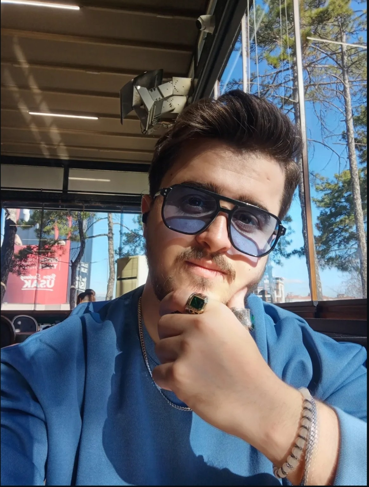

Uşak Üniversitesi
İletişim Fakültesi
Gazetecilik BölümüÖğrenci
Merhaba, ben
Geçmişi merak eden,
bugünü anlamaya çalışan bir gazetecilik öğrencisi.

Olayların arkasındaki nedenler,
insanların anlatacak hikâyeleri var.
Ben Mustafa Kaan Aykoç. Uşak Üniversitesi İletişim Fakültesi Gazetecilik Bölümü öğrencisiyim.
Haberlerin arkasındaki hikâyeleri keşfetmek ve farklı insanların görüşlerini dinlemek ilgimi çekiyor. Öğrendiklerimi araştırma, haber yazımı ve röportaj çalışmalarıyla geliştirmeye çalışıyorum.
Merakım gazetecilikle sınırlı değil. Harp tarihinden makroekonomiye, finanstan teknolojiye uzanan ilgi alanlarım, dünyaya farklı pencerelerden bakmama yardımcı oluyor.
Görünenin arkasındaki soruyu bul.
Farklı kaynakları ve bakış açılarını incele.
Öğrendiklerini açık ve anlaşılır biçimde paylaş.
Teoriyi, gözlemi ve anlatıyı bir araya getiren bir eğitim.
İletişim Fakültesi
Gazetecilik eğitimim boyunca üzerinde çalıştığım ve uygulamayla geliştirdiğim beceriler.
Topladığım bilgileri düzenli, anlaşılır ve haberin önem sırasına uygun metinlere dönüştürmek.
Açık ve anlaşılır anlatımKonuya uygun sorular oluşturmak, görüşleri dinlemek ve görüşmeleri yazıya aktarmak.
Soru sormak ve dinlemekFarklı kaynaklardan bilgi toplamak, kaynakları karşılaştırmak ve konunun arka planını incelemek.
Kaynak ve bağlamDüşünceleri doğru kelimelerle ifade etmek ve okuyucuyla anlaşılır bir iletişim kurmak.
Düşünceden metneGeçmişin izleri, bugünün dinamikleri ve yarının ihtimalleri. Takip etmekten keyif aldığım konular.
Tarihî olayları, savaşları ve askerî stratejileri araştırmayı; geçmişteki gelişmelerin günümüze etkilerini incelemeyi seviyorum.
Savaşların yalnızca cephedeki gelişmelerini değil, siyasi ve toplumsal sonuçlarını da anlamaya çalışmak.
Ekonomik gelişmeleri ve finans dünyasını takip ediyorum. Enflasyon, faiz ve küresel piyasalar arasındaki ilişkiler ilgimi çekiyor.
Ekonomik kararların günlük yaşama yansımasını ve piyasaların gelişmelere nasıl tepki verdiğini incelemek.
Spor karşılaşmalarını ve sporcuların kariyerlerini takip etmekten keyif alıyorum.
Rekabetin yanında sporcuların disiplinini, mücadelelerini ve başarıya uzanan hikâyelerini takip etmek.
Yeni cihazları, dijital araçları ve teknolojik gelişmeleri incelemeyi seviyorum.
Yeni teknolojilerin nasıl çalıştığını ve iletişim alışkanlıklarımızı nasıl değiştirdiğini araştırmak.
Güncel haberleri ve farklı haber anlatım biçimlerini takip ederek gazetecilik bakış açımı geliştirmeye çalışıyorum.
Aynı olayın farklı kaynaklarda nasıl ele alındığını ve anlatım tercihlerinin okuyucuya etkisini incelemek.
Bazen bir fotoğraf da kendini anlatmanın bir yoludur. Fotoğraflara dokunarak büyük hâllerini inceleyebilirsiniz.
Gazetecilik, tarih, ekonomi ya da teknoloji… Paylaşacak bir düşünceniz varsa bir mesaj taslağı hazırlayabilirsiniz.